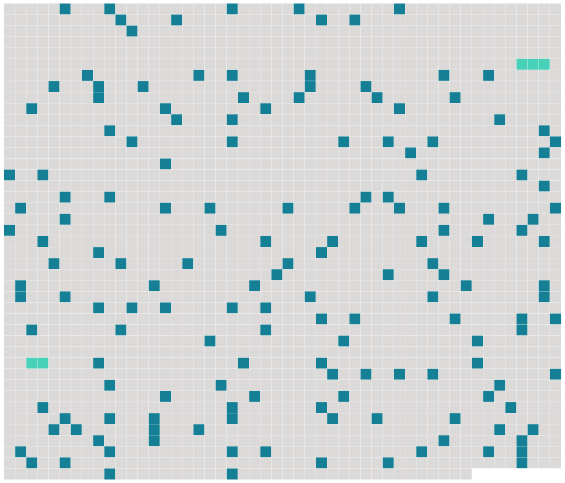

Longueur nb maillons : 164 mentions |
 |
RÉVEIL
[Elle] vivait tranquille, sans enfants, heureuse dans [sa] maison cachée sous les arbres, et que les ouvriers appelaient « le château ». M. Vasseur, bien plus vieux qu' [elle] , était bon. [Elle] l'aimait ; et jamais une pensée coupable n'avait pénétré dans [son] coeur.
[Sa] mère venait passer tous les étés à Ciré, puis retournait s'installer à Paris pour l'hiver, dès que les feuilles commençaient à tomber. Chaque automne [Jeanne] toussait un peu. [6 phrases]
Or, cette année -là, quand revint octobre, le médecin conseilla à [la jeune femme] d'aller passer l'hiver à Paris chez [sa] mère, l'air du vallon devenant dangereux pour [sa] poitrine.
[Elle] partit. Pendant les premiers mois [elle] pensa sans cesse à la maison abandonnée où s'étaient enracinées [ses] habitudes, dont [elle] aimait les meubles familiers et l'allure tranquille.
Puis [elle] s'accoutuma à [sa] vie nouvelle et [prit] goût aux fêtes, aux dîners, aux soirées, à la danse. [Elle] avait conservé jusque -là [ses] manières de jeune fille, quelque chose d'indécis et d'endormi, une marche un peu traînante, un sourire un peu las. [Elle] devint vive, gaie, toujours prête aux plaisirs. Des hommes [lui] firent la cour.
[Elle] s'amusait de leurs bavardages, [jouait] avec leurs galanteries, sûre de [sa] résistance, un peu dégoûtée de l'amour par ce qu' [elle] en avait appris dans le mariage. La pensée de livrer [son] corps aux grossières caresses de ces êtres barbus [la] faisait rire de pitié et frissonner un peu de répugnance. [Elle] se demandait avec stupeur comment des femmes pouvaient consentir à ces contacts dégradants avec des étrangers, alors qu'elles y étaient déjà contraintes avec l'époux légitime.
[Elle] eût aimé plus tendrement [son] mari s'ils avaient vécu comme deux amis, s'en tenant aux chastes baisers qui sont les caresses des âmes.
Mais [elle] s'amusait beaucoup des compliments, des désirs apparus dans les yeux et qu' [elle] ne partageait point, des attaques directes, des déclarations jetées dans l'oreille quand on repassait au salon après les fins dîners, des paroles balbutiées si bas qu'il les fallait presque deviner, et qui [lui] laissaient la chair froide, le coeur tranquille, tout en chatouillant [sa] coquetterie inconsciente, en allumant au fond d' [elle] une flamme de contentement, en faisant s'épanouir [sa] lèvre, briller [son] regard, frissonner [son] âme de femme à qui les adorations sont dues. [Elle] aimait ces tête-à-tête des soirs tombants, au coin du feu, dans le salon déjà sombre, alors que l'homme devient pressant, balbutie, tremble et tombe à genoux.
C'était pour [elle] une joie exquise et nouvelle de sentir cette passion qui ne [l'] effleurait pas, de dire non de la tête et des lèvres, de retirer [ses] mains, de se lever, et de sonner avec sang-froid pour demander les lampes, et de voir se redresser confus et rageant, en entendant venir le valet, celui qui tremblait à [ses] pieds.
[Elle] avait des rires secs qui glaçaient les paroles brûlantes, des mots durs tombant comme un jet d'eau glacée sur les protestations ardentes, des intonations à faire se tuer celui qui [l'] eût adorée éperdument. Deux jeunes gens surtout [la] poursuivaient avec obstination. [4 phrases]
d'Avancelle, frémissait en [l'] approchant, osait à peine deviner [sa] tendresse, mais [la] suivait comme son ombre, disant son désir désespéré par des regards éperdus et par l'assiduité de sa présence auprès d' [elle]
[Elle] appelait le premier le « Capitaine Fracasse » et le second « Mouton Fidèle » ; [elle] finit par faire de celui -ci une sorte d'esclave attaché à [ses] pas, dont [elle] usait comme d'un domestique.
[Elle] eût bien ri si on [lui] eût dit qu' [elle] l'aimerait. [Elle] l'aima pourtant d'une singulière façon.
Comme [elle] le voyait sans cesse, [elle] avait pris l'habitude de sa voix, de ses gestes, de toute l'allure de sa personne, comme on prend l'habitude de ceux près de qui on vit continuellement. Bien souvent en [ses] rêves son visage [la] hantait ; [elle] le revoyait tel qu'il était dans la vie, doux, délicat, humblement passionné ; et [elle] s'éveillait obsédée du souvenir de ces songes, croyant l'entendre encore, et le sentir près d' [elle]
Or, une nuit ( [elle] avait la fièvre peut-être ), [elle] se vit seule avec lui, dans un petit bois, assis tous deux sur l'herbe. Il [lui] disait des choses charmantes en [lui] pressant les mains et les baisant.
[Elle] sentait la chaleur de [sa] peau et le souffle de [son] haleine ; et, d'une façon naturelle, [elle] lui caressait les cheveux. [1 phrases]
[Elle] se sentait pleine de tendresse pour lui, d'une tendresse calme et profonde, heureuse de toucher son front et de le tenir contre [elle] Peu à peu il [l'] enlaçait de ses bras, [lui] baisait les joues et les yeux sans qu' [elle] fit rien pour lui échapper, et leurs lèvres se rencontrèrent.
[Elle] s'abandonna. [1 phrases]
[Elle] s'éveilla, vibrante, éperdue, et ne [put] se rendormir, tant [elle] se sentait obsédée, possédée toujours par lui.
Et quand [elle] le revit, ignorant du trouble qu'il avait produit, [elle] se sentit rougir ; et pendant qu'il [lui] parlait timidement de son amour, elle se rappelait sans cesse, sans pouvoir rejeter cette pensée, [elle] se rappelait l'enlacement délicieux de [son] rêve.
[Elle] l'aima, [elle] l'aima d'une étrange tendresse, raffinée et sensuelle, faite surtout du souvenir de ce songe, bien qu' [elle] redoutât l'accomplissement du désir qui s'était éveillé dans [son] âme. [1 phrases] Et [elle] lui dit tout, jusqu'à la peur qu' [elle] avait de [ses] baisers.
[Elle] lui fit jurer qu'il [la] respecterait. [Il] la respecta. [3 phrases]
[Elle] comprit qu' [elle] ne résisterait plus longtemps ; et, comme [elle] ne voulait pas faillir, [elle] écrivit à [son] mari qu' [elle] désirait retourner près de lui et reprendre [sa] vie tranquille et solitaire.
Il répondit une lettre excellente, en [la] dissuadant de revenir en plein hiver, de s'exposer à ce brusque dépaysement, aux brumes glaciales de la vallée.
[Elle] fut altérée et indignée contre cet homme confiant, qui ne comprenait pas, qui ne devinait pas les luttes de [son] coeur.
Février était clair et doux, et bien qu' [elle] évitât maintenant de se trouver longtemps seule avec Mouton Fidèle, [elle] acceptait parfois de faire en voiture, avec lui, une promenade autour du lac, au crépuscule. [1 phrases] Le petit coupé allait au pas ; la nuit tombait ; ils se tenaient les mains, serrés [l'un] contre l'autre. [Elle] se disait : « C'est fini, c'est fini, [je] suis perdue », sentant en [elle] un soulèvement de désirs, l'impérieux besoin de cette suprême étreinte qu' [elle] avait ressentie si complète en un rêve. [1 phrases]
Il n'osa pas [la] reconduire chez [elle] , et [la] laissa sur [sa] porte, affolée et défaillante.
M. Paul Péronel [l'] attendait dans le petit salon sans lumière. En [lui] touchant la main, il sentit qu'une fièvre [la] brûlait. [1 phrases] [Elle] l'écoutait sans répondre, pensant à l'autre, croyant entendre l'autre, croyant le sentir contre [elle] , dans une sorte d'hallucination.
[Elle] ne voyait que lui, ne se [rappelait] plus qu'il existait un autre homme au monde ; et quand [son] oreille tressaillait à ces trois syllabes : « Je [vous] aime », c'était lui, l'autre, qui les disait, qui baisait [ses] doigts, c'était lui qui serrait [sa] poitrine comme tout à l'heure dans le coupé, c'était lui qui jetait sur [ses] lèvres ces caresses victorieuses, c'était lui qu' [elle] étreignait, qu' [elle] enlaçait, qu' [elle] appelait de tout l'élan de [son] coeur, de toute l'ardeur exaspérée de [son] corps.
Quand [elle] s'éveilla de ce songe, [elle] poussa un cri épouvantable. Le capitaine Fracasse, à genoux près d' [elle] , [la] remerciait passionnément en couvrant de baisers [ses] cheveux dénoués. [Elle] cria : « Allez -vous -en, allez -vous -en, allez -vous -en!!
» [1 phrases] Le lendemain, [elle] retournait au Val de Ciré. [Son] mari, surpris, [lui] reprocha ce coup de tête.
« [Je] ne pouvais plus vivre loin de toi », dit [-elle] Il [la] trouva changée de caractère, plus triste qu'autrefois ; et quand il [lui] demandait : « Qu'as [-tu] donc?? [Tu] sembles malheureuse. Que désires [-tu] ?? » [Elle] répondait : « Rien. [1 phrases]
»
[Elle] le reçut sans trouble et sans regrets, comprenant soudain qu' [elle] ne l'avait jamais aimé qu'en un songe dont Paul Péronel [l'] avait brutalement réveillée. Mais le jeune homme, qui [l'] adorait toujours, pensait en s'en retournant : « Les femmes sont vraiment bien bizarres, compliquées et inexplicables. |
 |
Il est possible de télécharger la ressource sur la page Ortolang |
Si vous avez des questions ou vous voyez des erreurs, merci d'envoyer un mail à silvia.federzoni89@gmail.com |